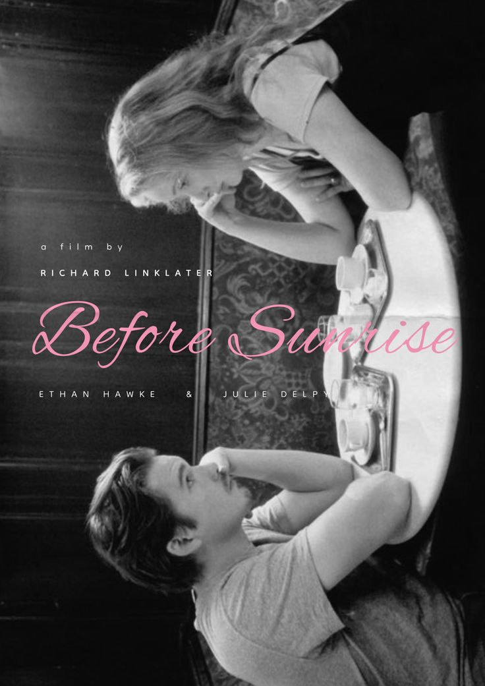

[Before Sunrise] (1995)
Dir: Richard Linklater
A study on romance and how my train rides have never been the same
since...

Two Strangers, One Dialogue
This film is literally just one heck of a long dialogue.
But it's one of THE most romantic films that I've watched. Each
conversation is so raw, honest, playful and authentic. Even the silence
speaks volumes...I mean the listening booth scene? Unreal, periodt.
Why I Love This Film
I wonder if it's my yearning for deep connection. Maybe I want to feel
that kind of click with a person, who knows... But the essence of
how two humans can connect with each other is so beautifully portrayed,
I'm having doubts that this can even happen in real-life. The genre of
this film is actually fantasy.
Quotes that Lives Rent Free in My Head
- "Isn't everything we do in life a way to be loved a little more?"
-
"I kind of see this all love as this, escape for two people who don't
know how to be alone. People always talk about how love is this totally
unselfish, giving thing, but if you think about it, there's nothing more
selfish.
-
"If there's any kind of magic in this world...it must be in the attempt
of understanding someone, sharing something. I know it's almost
impossible to succedd...but who cares, really? The answer must be in the
attempt."
Popular Letterboxd Reviews on Before Sunrise
Richard Linklater Wiki